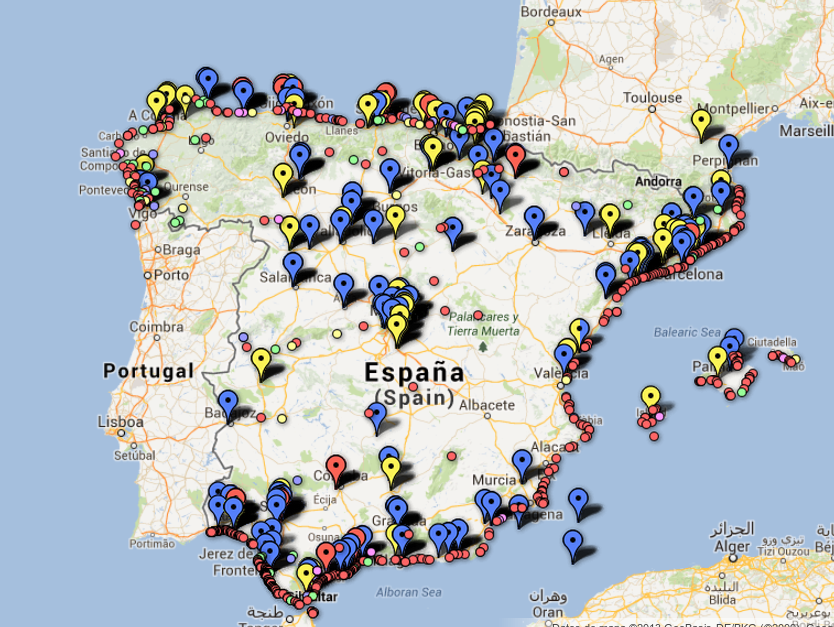

Los residuos, que son producto de las actividades industriales, se vierten al aire, tierra y agua. Estamos intentando establecer una correlación entre los vertidos residuales al agua y la calidad de las aguas de baño. En el siguiente mapa figuran las industrias que vierten residuos de Carbono Orgánico a zonas de baño cercanas. Los residuos de carbono orgánico tienen incidencia en la formación de colonias de Escherichia Coli y Enterococo Intestinal, las dos bacterias que se toman como indicadores para la medición de la calidad de aguas de baño.

¿Eres medioambientólogo? ¿Tienes conocimiento en sistemas de ínformación geográfica (GIS) o análisis de datos? ¡Ayúdanos a descubrir si los vertidos de residuos al agua están detrás de las variaciones en la calidad de aguas de baño!. Puedes descargar los datos en CSV desde la forja del proyecto. Nuestras fuentes de datos son la Agencia Medioambiental Europea y el Registro Europeo de Transferencias y Emisiones de Residuos.
Echar una mano
En el siguiente gráfico figuran las 15 zonas geográficas en España desde las cuales más cantidada (en kilogramos) de residuos de carbono orgánico se han vertido al agua desde 2001 a 2012.
En el cuadro de abajo se presenta el listado total industrias que viertes residuos con carbono orgánico al agua. Puede observar estos y más datos a través de la aplicación de exploración de datos (basada en Google Fusion Tables).